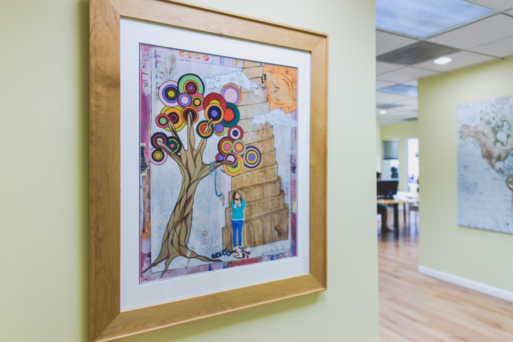

At English Now!, our students learn English and so much more. Our educators find great joy in serving international residents of the Washington D.C. area, as well as students who are visiting from around the world. Whether our students plan to stay here for a few years or a few months, we want to make their transitions easier. Our classes and programs help newcomers engage in their communities, enjoy their time in the United States, and thrive in a new culture.
As a community service to the Washington D.C.-area international community and our students and their families, we offer programs on language and culture at our school. We also partner with organizations including embassies, heritage language schools, and family associations of international organizations, to support international residents of the area and short-term visitors. We are happy to arrange a 90-minute session delivered to your organization - at your location or potentially at our school - at no cost, if you are nearby, one of our instructors is available at your suggested date and time, and your community would benefit from the program. Please contact us if you have questions about any of the following Language and Culture programs or would like to arrange one for your community.
Ultimately, the goal of learning a new language is to improve communication between people. So why is it often hard to understand each other, even when we’re speaking the same language? Sometimes, our cultural differences need more explanation than our words. Our Language and Culture Series addresses the many aspects of culture that affect life in the United States. Participants become aware of cultural differences between the United States and other countries, and become more comfortable communicating in a variety of situations.
Are you an educator who works with families who are new to the United States? Our Language, Culture, and Education Program addresses key questions, such as:
A presentation that we deliver at this program is available for use for you with your community. (Download the Powerpoint presentation here.)
We also stock copies of an outstanding book by one of our partners, the Interchange Institute, called "Understanding American Schools: The Answers to Newcomers' Most Frequently Asked Questions". This is a great book for educators and for anyone who supports international families. See here for more information, or visit us and review a copy.
Do you work with parents of young children who are new to the United States? Raising a family here might feel very different from what newcomers were used to in their native countries. Of course, parenting styles everywhere vary based on many factors, including income, education, and geographical region. Still, newcomers to the United States may wonder:
English Now! also invites newly arrived parents and their young children to join our Parent Talk Conversation Club. Please encourage parents who are seeking a local support network to contact us for more information!
How does our language and culture influence how we interact with healthcare providers? In our Language, Culture, and Medicine classes, we explore questions such as:
More about Language, Culture, and Medicine
Here in the Washington area, our workplaces are richly and uniquely diverse. Our colleagues and clients represent many cultures and many nations. With so many people adapting to a new work culture, good communication can be a challenge. Our Language, Culture, and the Global Workplace programs focus on questions, such as:
We can also support your organization's goals with classes at our school site in Bethesda. Alternatively, if your organization is located in the D.C. area, we can teach a corporate program at your location, taught by our same high quality instructors.
Contact us to explore Language, Culture and your area of interest!